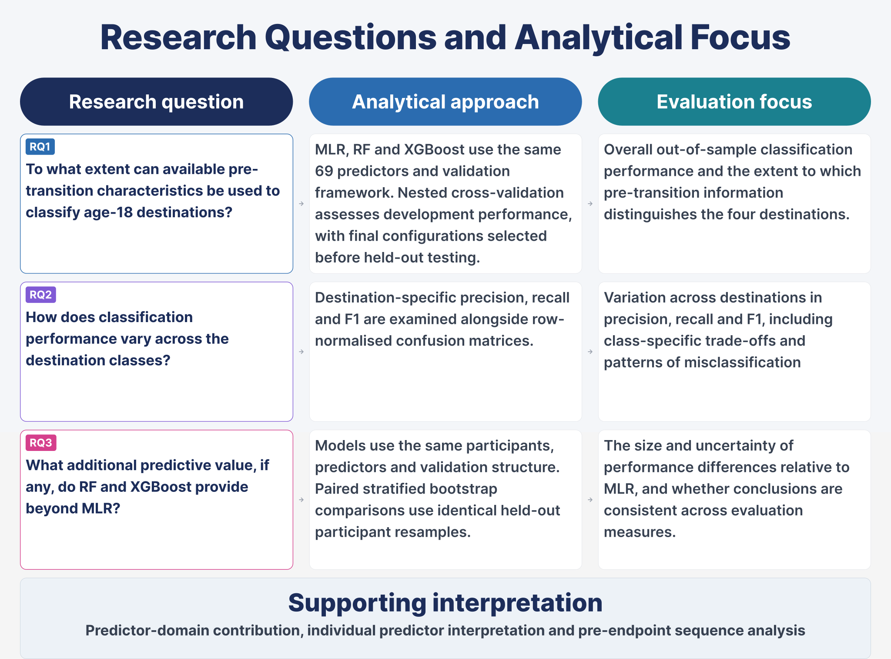
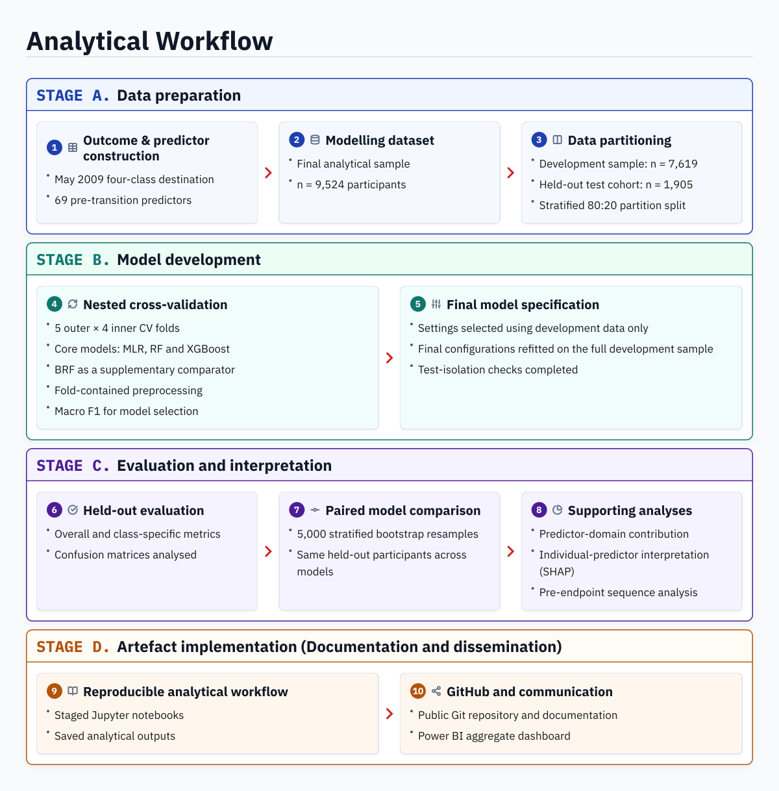

9,524
Modelling sample
Participants included in modelling
MSc Data Science Dissertation
A Comparison of Multinomial Logistic Regression and Machine-Learning Models
Using Next Steps (LSYPE1)
Why it matters
Age 18 is an important transition point between compulsory schooling and later education, training and employment. Knowing a young person’s destination at this point tells us what happened, but not how clearly it could have been distinguished beforehand or whether some destinations are harder to identify than others.
For researchers and analysts, multiclass classification helps show how performance varies across destinations and whether different models add useful predictive information. For policy-oriented users, it helps show where the available pre-transition information is more informative and where gaps remain.
This project examines four age-18 destinations — Education, Employment, Apprenticeship or training, and NEET — using information available before transition. It compares MLR, Random Forest and XGBoost and examines what the available information can tell us about differences between these destinations.
As you move through the analysis, keep these questions in mind:
Study at a glance
9,524
Participants included in modelling
69
Representing 10 predictor domains
4
Education · Employment · Apprenticeship or training · NEET
3
Multinomial logistic regression · Random forest · XGBoost
For policy analysts and researchers working on post-16 transitions, and analysts interested in multiclass classification.
This project uses safeguarded Next Steps data. Only anonymised or pre-aggregated outputs are presented.


Key findings
0.4378
Random Forest achieved the highest held-out macro F1 among the three core models.
Different by destination
Education was classified most successfully, while Apprenticeship or training was the most difficult.
Metric trade-offs
RF and XGBoost improved macro F1 over MLR, but this pattern did not extend to balanced accuracy.
Predictive information
Educational aspirations and post-16 plans showed the clearest predictor-domain contribution.
Research questions answered
Available pre-transition characteristics provided limited ability to distinguish the four age-18 destinations. Random Forest had the highest held-out macro F1 among the core models at 0.4378.
Classification performance varied across destinations. Education was classified most successfully, while Apprenticeship or training was the most difficult across models.
RF and XGBoost improved held-out macro F1 over MLR, but the gains were modest and did not extend to balanced accuracy.
Closing perspective
Reflecting on the project, I initially expected the more complex ML models to perform better and model comparison to produce a clearer conclusion. Instead, the findings showed trade-offs across models, metrics and destinations. This shifted my focus from identifying a single best-performing model to interpreting those trade-offs.
I hope the study also contributes in three ways for its intended research and policy-oriented users.
The study shows why multiclass model comparison should consider class-specific performance, multiple metrics and separate validation rather than relying on a single overall score.
The findings suggest that age-18 destinations differ in how clearly they can be distinguished from the available pre-transition information. The activity histories also show that the same age-18 destination can follow different preceding pathways.
For research and policy-oriented users, the aggregate findings help show where the available information is more informative, where gaps remain and where further investigation may be needed.
Explore the artefact
Explore the repository structure, notebook sequence and supporting documentation.
Enter repository →Follow the staged analytical workflow and code.
View notebooks →Read concise summaries of each analytical stage.
View summaries →View the completed reporting artefact and static report screenshots.
View Power BI artefact →